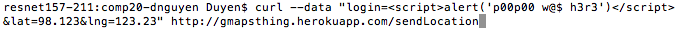
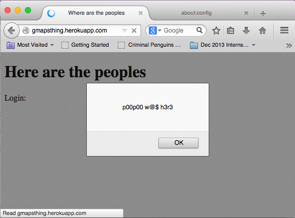
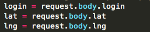
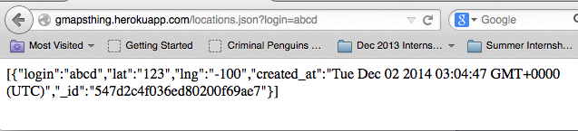
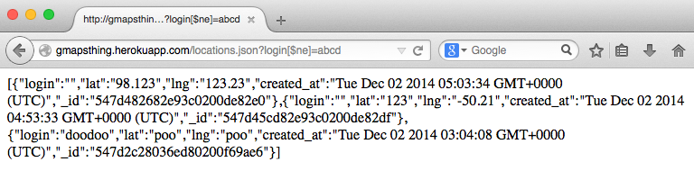
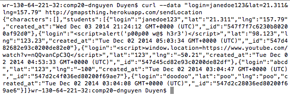
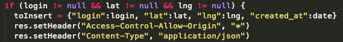

Security Assessment
Introduction
This assessment tests the security of the "Where in the World" web application developed by Jeremy Goldman. The web application provides 3 APIs to its client: a POST API that stores the login, location (latitude and longitude), and timestamp of clients in its database. Any client who uses it sends their login and location to the database, and if sent successfully, will receive data from the last 100 database accesses; a GET API that allows a client to search through check-ins by login; and another GET API that returns a copy of MBTA's red line JSON data. Vulnerabilities that I've found in the current application implementation were tested and documented below.
Methodology
Testing was first done using the black-box method. The server itself was run on heroku's server and tested using the link given to me by Jeremy. I added data to the database using curl in the terminal, and tested querying of the database through a web browser (Chrome and Firefox). The server's code was then reviewed for any other potential security vulnerabilities that isn't apparent from a quick check of the code.
Abstract of Findings
As is true with many projects the first time around, the server has many security issues. One of the issues found allow the attacker to redirect users to other sites, possibly giving users viruses. Another issue allow attackers to fake their location to get data of other users from the database. In querying data, attackers are able to retrieve all the data in the database. Additionally, any attacker on any domain can access the server. Overall, there are not enough security measures taken to protect the server and any user data.
Issues Found
- Cross-Site Scripting
- Cross-site scripting allows the attacker to embed scripts into a page, which are executed on the client-side when the server is used by a client. The script may be executed each time the page is loaded or every time an action is performed, depending on the script embedded by the attacker.
- Severity: HIGH. This vulnerability allows attackers to embed malicious scripts that will affect other clients using the server. Running the following code to enter into the database:

results in the following alert box opening on the client side when a client accesses the web application:

A very malicious attacker could embed a redirecting script that leads a client to a website full of viruses, further compromising the client's security. They can also use cross-site scripting to hijack an account and access private information.
- Validating the input coming into the server, such as filtering input parameters for any special characters, makes it possible to screen for any scripts being used as input. If not when being input, validating output is another prevention method. Data that has already been put in the database previously, can retrospectively be removed, and by validating input/output, prevent further attacks by cross site scripting. Currently, input is not sanitized in the web application as shown below:

- SQL Injection
- In the get API locations.json, clients are able to search through the database for a certain login, retrieving the past 100 login data of that specific login. A SQL injection allows the user to query and retrieve information from the database regardless of login information.
- Severity: HIGH. This vulnerability exposes the server's clients simply because the client has used the server and logged in at some point in time. Without a SQL injection, as shown below, clients are able only to access data with their login:

However, using a SQL injection, an attacker can retrieve login data of several users in one sitting:

Data can also be modified by the attacker using a SQL injection.
- Filtering the query input for characters that are often used in a SQL injection will help protect the server from this vulnerability. In the example above, screening for [$ne] would have prevented the attacker from getting all the data. Screening for semicolons (;) and single quotes (') will further prevent this vulnerability.
- Manual Data Entry
- Using curl, data can be input into the database store to retrieve information in the database. Of course, this is how any database works - you WANT to store information in the database. But do you want fake data, too? Currently, clients can manually type in their login and locations to get into the database. But how do we know whether that's their actual location?
- Severity: Medium. The database expects a login, latitude, and longitude. Common sense tells us that the latitude and longitude should be numbers only, but this web application does not currently check for that. Additionally, an attacker's location can be faked, since they manually input their data.

If server manager's were trying to track down their clients for whatever reason, the fake data could throw them off. The input for janedoe123 says she's in Hawaii. But she's probably not actually there. And how is it that some latitudes and longitudes are strings? These will not break the database or compromise the security of other client's necessarily, but if the web application's database is being used in another program, incorrect input could easily break the program, causing a risk there.
- Validating the input is one way to check that only data with correct login, latitude, and longitude values are added to the database, tossing out any locations listed as strings and excluding them from the database. Additionally, rather than having clients manually input their locations, using a geolocator to track their location from the backend will prevent fake data from being put into the database.
- Cross Origin Restrictions
- Cross origin restrictions are the norm with HTML and JavaScript - if the user is not using the same domain, he/she cannot access the site as a security measure. However, cross origin resource sharing can be enabled from the server side. Opening your domain to too many other domains, however, creates a vulnerability in the server.
- Severity: HIGH. Allowing the server to be accessed from any domain creates a large vulnerability to all clients using the database, as it means that anyone on any domain - including all attackers, can access their data, compromising the confidentiality of information of all users.

As seen in the code above, the server does enable access from any domain. The login information itself may not be super sensitive, but all confidentiality is destroyed. If more sensitive information were stored in the database, it would cause a huge security risk, since anyone can access it.
- Resolving this vulnerability is easy: rather than allowing access to all origins with the '*', determining which domains will actually need to access the database and only giving access to those ones will largely reduce the vulnerability.
Conclusion
Currently, the "Where in the World" web application is riddled with security holes, creating many vulnerabilities within the server itself as well as vulnerabilities that are potential dangerous to clients using the server. Though a rather time consuming effort, by following the suggestions above, the security risks can be largely reduced.